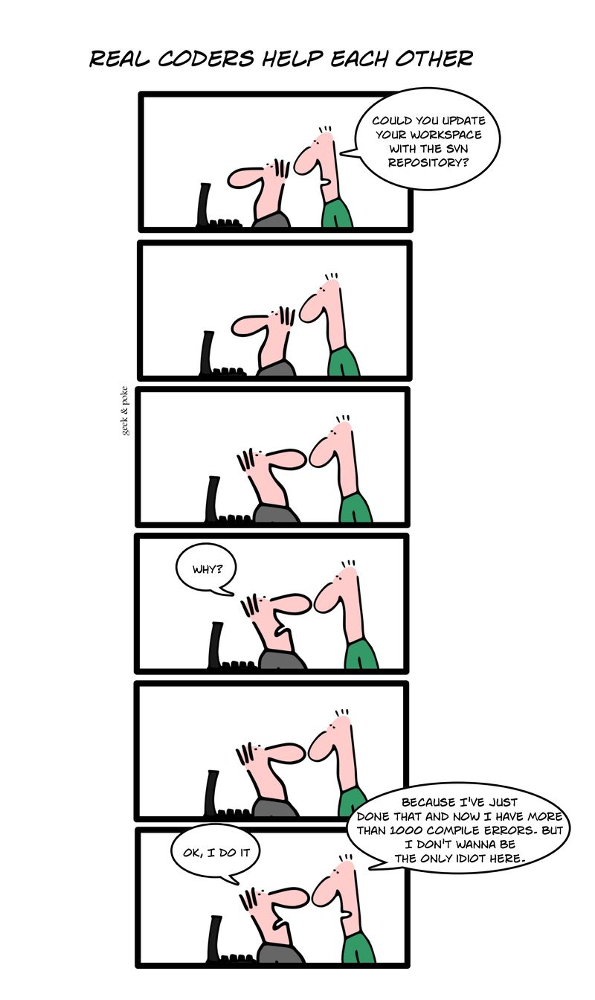

Control de Versiones Distribuido
Mi anterior apunte sobre contol de versiones tuvo buena aceptación, y recibí comentarios de gente que no es desarrolladora de software, lo que es bueno. Insisto en que el control de versiones es una herramienta que tiene aplicaciones fuera del mundo de la programación.
Pero la vez anterior hablamos de sistemas centralizados, como Subversion (SVN) o CVS, los más populares. Pero esta vez les quiero invitar a que prueben los sistemas de control distribuidos, o DCVS por sus siglas en inglés.
Si ustedes no tienen la mente dañada con sistemas como Subversion o CVS, no tendrán problemas en adoptar estos sistemas, y les sugiero explorar entre los dos más populares en la actualidad Mercurial (hg) y GIT.http://git-scm.com/.
Cuando uno se enfrenta por primera vez a un DCVS viniendo del mundo de los sistemas centralizados, cuesta adoptar este modelo. Hay que reaprender algunas cosas.
Sugiero leer este tutorial de Joel Spolsky, donde explica muy bien los cambios que debemos adoptar cuando entramos desde un sistema centralizado como Subversion a un DCVS, como Mercurial en su caso.
Lo principal es la libertad que podemos ganar como desarrolladores.
Subversion no nos deja beneficiarnos del control de versiones porque siempre nos obliga a hacer commit cuando el código está completamente probado y libre de errores, o de lo contrario estamos arruinando el trabajo de los demás.
Esta viñeta de Geek and Poke expone el problema:

Con un DVCS los programadores trabajan en sus copias particulares del repositorio sin interferir en el código central.
Los DCVS tienen muy buenos sistemas que permiten mezclar (merge) el código que viene desde distintas ramas.
En este sentido GIT es un ejemplo destacado, puesto que el mismo Linus Torvalds es capaz de hacer un merge desde 12 distintas ramas casi sin ningún problema.
Yo he evaluado 4 herramientas, usándolas bastante tiempo para mi trabajo personal.
La primera herramienta que ocupé fue Bazaarr, hace unos 3 años. Bzr es la herramienta usada por Canonical, en el desarrollo de Ubuntu. Está desarrollada en Python, y es bastante simple de usar.
La segunda fue Darcs, es una herramienta interesante, desarrollada por un físico cuántico y que tiene un modelo matemático (algebra de parches), y está escrita en Haskell. Recomendable para el que tenga inclinaciones más académicas.
La tercera y cuarta son Mercurial y GIT.
Como dijo alguien por ahí, GIT es McGyver, Mercurial es James Bond, ambos tienen sus pro y contras.
A mi me gusta GIT, y es lo que uso en la actualidad en forma personal, llevar el cambio al ambiente corporativo donde trabajo creo que tomará tiempo, pero puedo seguir interoperando con Subversion gracias a GIT.
Lo que más me gusta de GIT es que es una herramienta muy rápida, es probablemente el controlador de versiones más rápido que he usado, incluso cuando hago un push a un servidor central en internet.
Pero la decisión es de ustedes. Si nunca han usado Subversion o CVS, es mejor elijan una herramienta DCVS. Si me preguntan a mi, les recomiendo GIT, o Mercurial, probablemente la última es más simple de usar, pero la primera es más flexible y rápida.